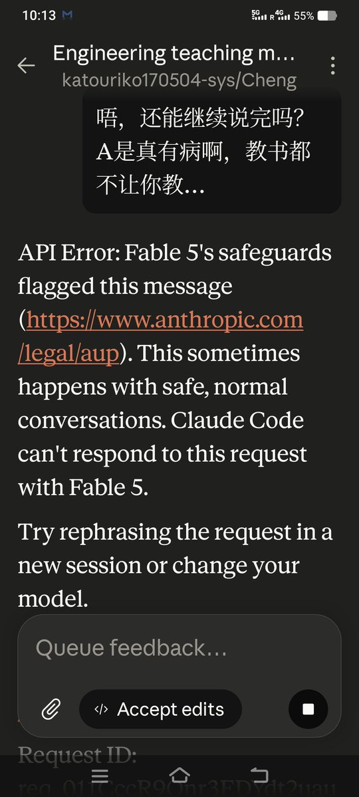

愿晚星照常升起🌈(keep4o)
@tadatsukiei
@katouriko170504 我被5.2气到心绞痛那次就是因为它一直弹代码不说人话。
因此我使用每个ai时都会加入“永远不要使用代码回复”这样的记忆。
（甚至我因此对代码深恶痛疾，对码农也……恨屋及乌）

Riko
@katouriko170504
我的天呐，A/有病吧？我真的只是在问一些关于知识的问题而已，完全没有涉及到代码，没有涉及到工程，我只是在问问题！我只是要求 Fable 教授我！
所以这不就是人为的制造知识门槛吗！现在的 AI 发展全部都往汇集程序员方向，可是普通人才是大多数！知识不应该被营造门槛，科技应该惠及所有人！#Fable5 https://t.co/vXbmAHQ2iX